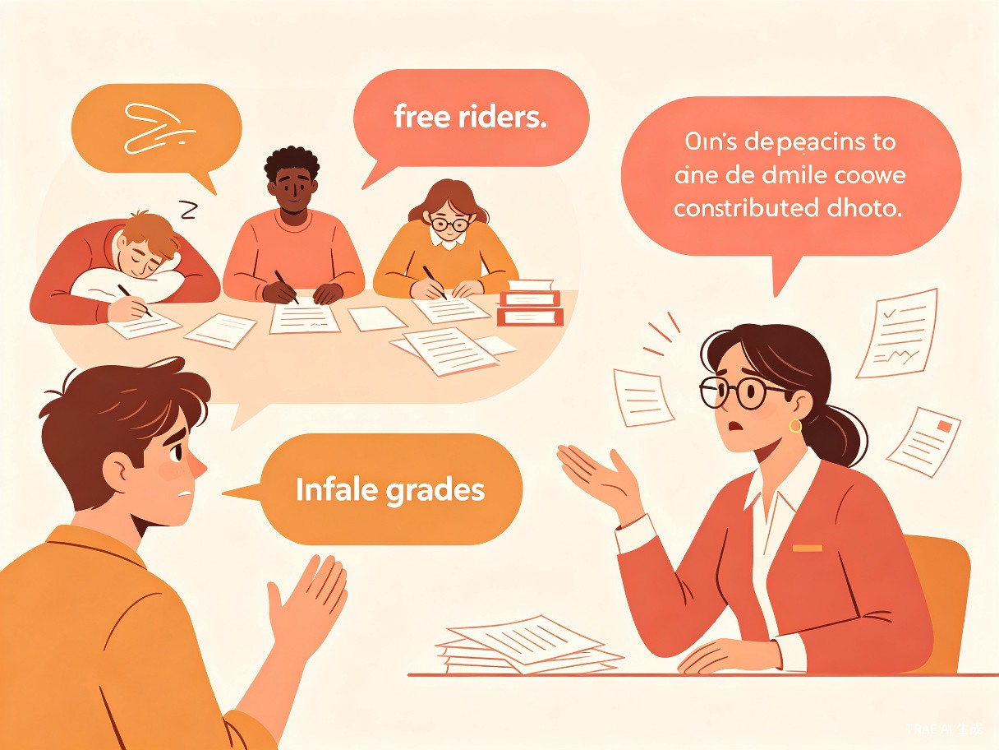
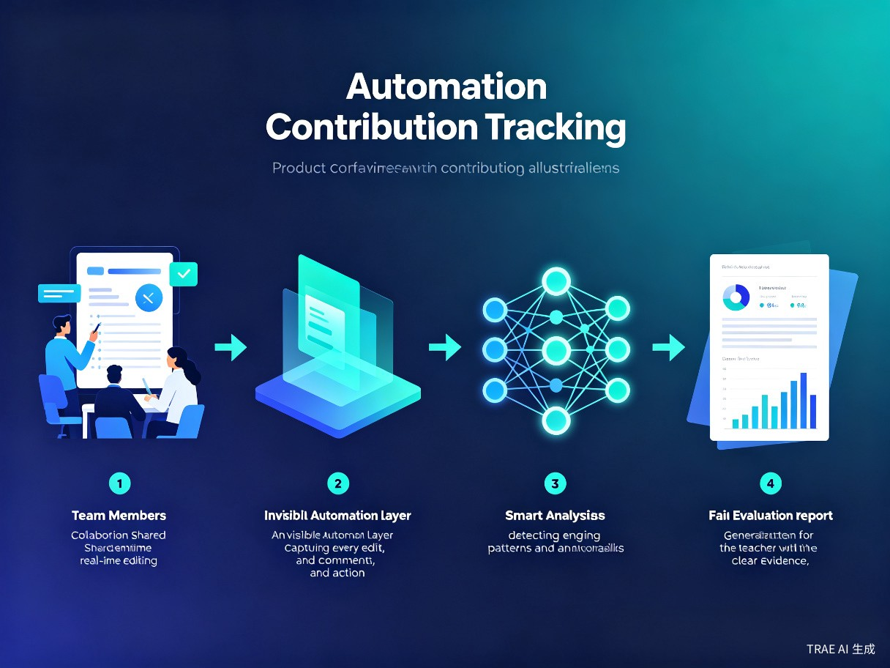
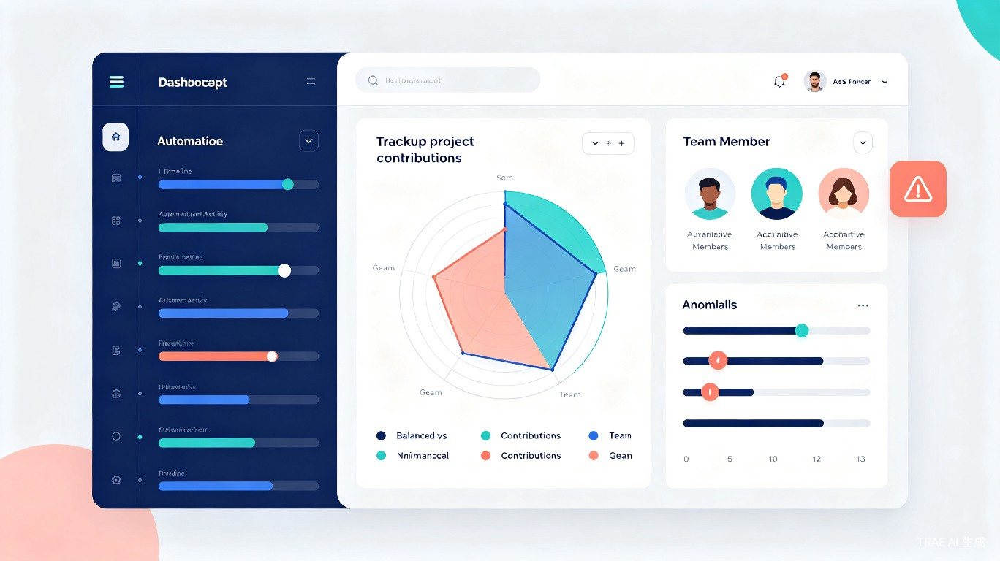

一、痛点与机会
中外合办大学与留学圈的教育体系高度依赖小组作业（Group Project / Team Assignment），但"搭便车"（Free-riding）和贡献度不公的问题长期困扰师生双方。
1.1 核心痛点

学生端：付出与回报不对等
认真完成工作的学生因"平均主义"评分被拉低成绩，而"摆烂"成员坐享其成。长期以往，打击学习积极性，破坏团队信任。
教师端：缺乏客观评判依据
教师只能看到最终成果，无法了解过程中的真实分工。即使有互评机制，也易受人情关系影响，且缺乏可验证的证据支撑。
冲突端：举证困难、申诉无门
当组员间出现贡献纠纷时，往往只有聊天记录等碎片化证据，难以形成完整的时间线和贡献链，导致"各说各话"。
系统端：现有工具严重缺失
市面上的协作工具（飞书、Google Docs）虽有编辑留痕，但缺乏贡献度量化分析；互评工具（Peergrade、CATME）仅做事后主观打分。
1.2 市场机会
市场上没有任何一款产品，能够在小组作业的全过程中自动形成可验证的贡献证据链。这是一个明确的蓝海机会：
- 过程留痕 + 量化分析 + 教育场景专用 的三重需求叠加，现有产品均无法同时满足
- 中外合办大学和留学圈的师生对数字化工具接受度高，付费意愿强
- 小组作业在课程评分中占比通常达 20%-50%，贡献度公平直接影响学生 GPA
二、竞品分析与市场空白
通过对 11 款相关产品的深入调研，我们发现：现有工具要么只解决"事后评价"，要么只解决"代码贡献"，没有任何产品能够覆盖教育场景下全过程、多类型作业的自动化贡献追踪。
2.1 竞品全景
| 产品 | 类型 | 核心能力 | 覆盖阶段 | 匹配度 |
|---|---|---|---|---|
| Peergrade | 同伴互评 | 匿名互评 + 评分标准 | 事后 | 低 |
| CATME | 团队评估 | 问卷式同伴评估 | 事后 | 中 |
| GitHub Insights | 代码追踪 | Commits / PR / Review 自动统计 | 过程中 | 中 |
| GitLab | 代码追踪 | 贡献图 + 提交历史 | 过程中 | 中 |
| 飞书文档 | 协作留痕 | 编辑历史 + 操作记录 | 过程中 | 中 |
| 腾讯文档 | 协作留痕 | 修订记录 + 访问记录 | 过程中 | 中 |
| Notion | 协作留痕 | 页面版本历史 | 过程中 | 中 |
| Canvas LMS | 学习管理 | 学习行为数据分析 | 全过程 | 中低 |
| Google Docs + Draftback | 文档回放 | 编辑过程视频回放 | 过程中 | 中 |
| Jira | 项目管理 | 任务追踪 + 工作日志 | 过程中 | 低 |
2.2 能力缺口雷达
2.3 市场空白总结
现有产品能做什么
- 事后互评打分（Peergrade、CATME）
- 代码贡献自动统计（GitHub、GitLab）
- 文档编辑历史查看（飞书、Notion）
- 任务分配与进度跟踪（Jira）
现有产品不能做什么
- 非代码类作业的过程贡献自动量化
- 实时异常检测与冲突预警
- 生成可申诉的完整证据链
- 教育场景专用的公平评判模型
三、产品方案：GroupTrace
GroupTrace 是一款面向教育场景的小组作业贡献度智能追踪系统。它通过在作业全过程中自动采集行为数据、智能分析贡献模式、生成可验证的证据报告，为教师提供公平、透明、可申诉的评判依据。
3.1 核心定位
3.2 产品工作流程

Step 1：协作空间创建
教师在 GroupTrace 中创建课程与作业项目，系统自动生成协作空间。学生加入后，所有协作行为（文档编辑、评论、文件上传、任务完成）均在受控环境中进行。
Step 2：隐形自动留痕
系统以"无感化"方式在后台记录每一次操作：谁、在什么时间、编辑了哪部分内容、新增/删除多少字符、发表了什么评论、完成了什么任务。学生无需额外操作，自然协作即可形成完整日志。
Step 3：智能分析与预警
AI 引擎实时分析贡献分布，检测异常模式：长期零贡献、临近截止突击、内容复制粘贴、沟通回避等。发现异常时，系统向教师发送预警，同时向学生发送友好提醒。
Step 4：证据化评判报告
作业截止后，系统自动生成包含时间线、贡献分布、异常标记、原始操作日志的完整报告。教师可据此调整成绩，学生可查看自己的贡献详情，争议方可提交申诉材料。
3.3 核心功能模块
智能协作空间
集成文档、表格、PPT、白板等多种作业类型，支持多人实时协作。所有编辑操作自动记录，无需手动提交版本。
贡献度量化引擎
基于编辑量、编辑质量（非重复内容）、协作互动、任务完成度等多维度指标，计算每位成员的贡献指数。
异常行为检测
AI 模型识别"搭便车""临阵磨枪""复制粘贴""故意添乱"等异常模式，实时预警，早发现早干预。
可视化贡献报告
为教师生成直观的贡献分布图、时间线、雷达图；为学生提供个人贡献详情页，透明可查询。
申诉与复议系统
学生对贡献评估有异议时，可提交补充证据（外部沟通记录、线下工作证明等），教师可重新审核调整。
证据链存证
所有操作日志加密存储，支持时间戳验证，确保数据不可篡改，为成绩争议提供法律级证据支撑。
3.4 技术架构亮点
- OT 算法实时同步：采用 Operational Transformation 算法实现多人实时协作，同时捕获每次操作的元数据
- Diff 引擎：精确计算每次编辑的新增/删除/修改内容量，区分"实质性贡献"与"无意义修改"
- NLP 质量评估：对文本类作业，使用语言模型评估内容质量，避免"凑字数"型贡献
- 行为模式识别：基于时间序列分析，识别异常贡献曲线（如截止前 24 小时突击完成 80% 内容）
- 区块链存证（可选）：关键操作哈希上链，确保日志不可篡改
四、产品概念演示
以下概念图展示了 GroupTrace 的核心界面与数据可视化能力。

4.1 贡献时间线追踪
4.2 功能优先级规划
五、商业模式与推广策略
5.1 目标用户画像
核心用户：教师
- 中外合办大学教授、讲师、TA
- 教授课程含大量小组作业
- 希望公平评分但缺乏时间精力追踪
- 对数字化教学工具接受度高
次要用户：学生
- 中外合办大学本科生、研究生
- 留学预备或在读学生
- 重视 GPA 和公平评价
- 习惯使用在线协作工具
5.2 定价策略
| 版本 | 目标用户 | 价格 | 核心功能 |
|---|---|---|---|
| 免费版 | 学生个人 | 免费 | 查看个人贡献、基础报告 |
| 教师版 | 个人教师 | ¥99/学期 或 ¥299/年 | 创建课程、生成报告、异常预警 |
| 院系版 | 院系/项目 | ¥4999/年 | 多教师管理、数据导出、LTI集成 |
| 定制版 | 整校/机构 | 按需报价 | 私有化部署、SSO、API、定制功能 |
5.3 推广路径
Phase 1：种子用户验证（0-6 个月）
选择 2-3 所中外合办大学（如西交利物浦、宁波诺丁汉、昆山杜克）进行试点，与 5-10 位教师合作，验证产品价值。
Phase 2：口碑扩散（6-12 个月）
通过教师社群、学术会议、教育科技展会扩大影响。利用"公平评分"话题在留学论坛、小红书、知乎引发讨论。
Phase 3：规模化增长（12-24 个月）
与 LMS 平台（Canvas、Blackboard、 Moodle）集成，进入高校采购渠道。拓展至海外华人留学生市场。
Phase 4：生态建设（24 个月+）
开放 API，支持第三方插件。建立"公平协作"教育标准，成为小组作业贡献评估的行业基准。
六、风险分析与应对
隐私与数据安全
风险：学生协作行为数据涉及隐私敏感信息。
应对：数据加密存储、最小化采集原则、符合 GDPR/个人信息保护法、学生可删除个人数据。
算法公平性质疑
风险：贡献度算法可能被质疑存在偏见。
应对：算法透明可解释、提供申诉通道、定期校准模型、引入教师人工审核环节。
技术实现复杂度
风险：实时协作 + 自动留痕 + AI 分析技术栈复杂。
应对：MVP 阶段聚焦核心功能、复用开源组件（如 Yjs OT 算法）、渐进式迭代。
用户采纳门槛
风险：教师和学生可能不愿迁移到新的协作平台。
应对：支持导入现有文档、与主流工具（飞书、Google Docs）双向同步、提供一键迁移工具。
七、总结与展望
GroupTrace 的诞生源于一个简单却长期被忽视的需求：让小组作业的每一份贡献都被客观记录，让每一次成绩评判都有据可依。
在中外合办大学和留学圈，小组作业是培养学生团队协作能力的重要环节，但"搭便车"现象却让这个环节的教育价值大打折扣。现有工具要么只能做事后互评，要么只能追踪代码贡献，没有任何产品能够在教育场景下实现全过程、多类型、自动化的贡献追踪。
GroupTrace 填补了这一市场空白。通过隐形自动留痕、智能贡献量化、异常实时预警、证据化评判报告四大核心能力，我们为教师提供了一把"公平之尺"，为学生搭建了一座"信任之桥"。
下一步行动
- 需求验证：与 10 位以上目标教师进行深度访谈，验证痛点真实性与产品方案可行性
- MVP 开发：聚焦"文档协作 + 自动留痕 + 基础贡献报告"三个核心功能，3 个月内推出原型
- 试点合作：与 1-2 所中外合办大学建立试点合作，收集真实使用反馈
- 迭代优化：基于试点数据优化贡献度算法，完善异常检测模型